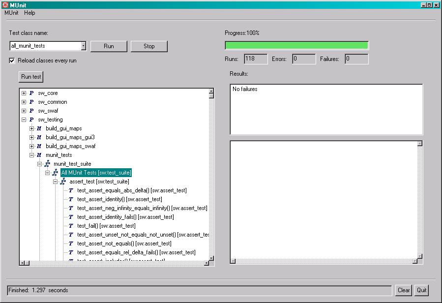

MUnit is a simple framework to write repeatable tests for GE Smallworld environment. It is an instance of the xUnit architecture for unit testing frameworks.
| README.html | : this file |
| cpl-v10.html | : Common Public License - v 1.0 |
| base | : the source code of the MUnit framework and text UI |
| munit_xml | : the source code for reporting results to xml |
| magik_gui | : the source code of the MUnit GUI |
Below are the installation steps for installing MUnit:
- First, download the latest version of MUnit, referred to below as
munit_XX.zipfrom \\uranium\winroot\swdev\release\munit- Unzip the
munit.zipdistribution file to a directory of your choice. (e.g. "c:\munit" )- Load module definition to image by sw_module_manager.load_standalone_module_definition( "c:\munit\base" )
- Load MUnit module to image sw_module_manager.load_module( "munit_base" )
Optional
- Load MUnit tests module definition to image by sw_module_manager.load_standalone_module_definition( "c:\munit\tests" )
- Load test module to image sw_module_manager.load_module( "munit_tests" )
and- Load MUnit magik GUI module definition to image by sw_module_manager.load_standalone_module_definition( "c:\munit\magik_gui" )
- Load MUunit magik GUI module to image sw_module_manager.load_module( "munit_magik_gui" )
Test the installation by using either the textual or graphical test runner to run the munit tests distributed with MUnit.
- For the textual test_runner, type:
MagikSF> test_runner.run( all_munit_tests )
$
........................................
........................................
......................................
Time: 1 seconds 172 milliseconds
OK (118 tests) [244 assertions]
- For the graphical test_runner, type:
MagikSF> test_runner_dialog.open()
$
a sw:test_runner_dialogand select all_munit_tests suite and use "Run" button to run unit tests.

All the tests should pass with an "OK" (textual) or a green bar (graphical).
License
The terms of the common public license used for MUnit.
Examples of possible MUnit extensions can be found in the munit/base/source/extensions directory: